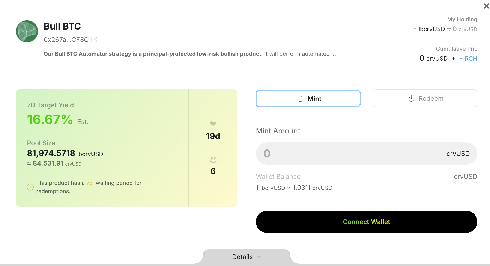
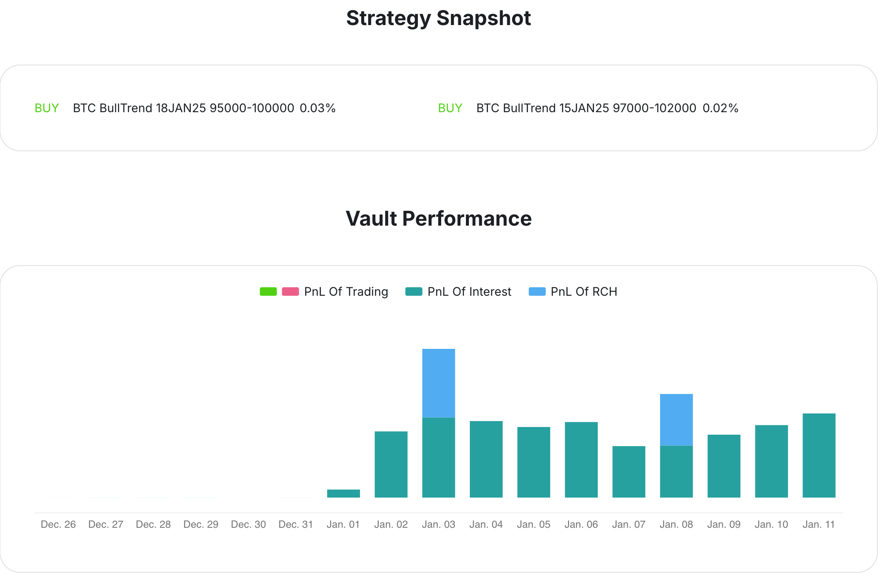
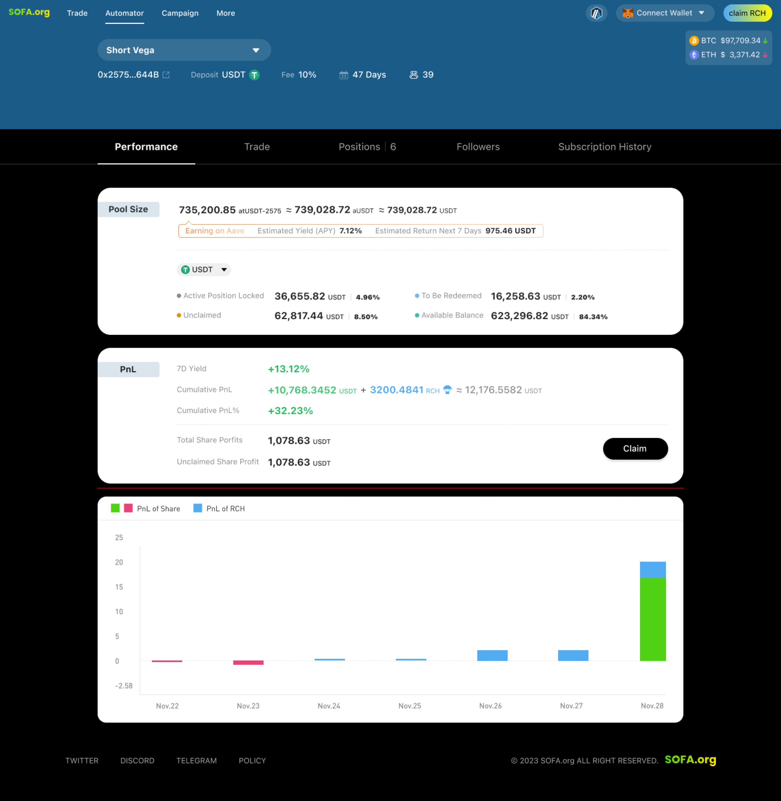
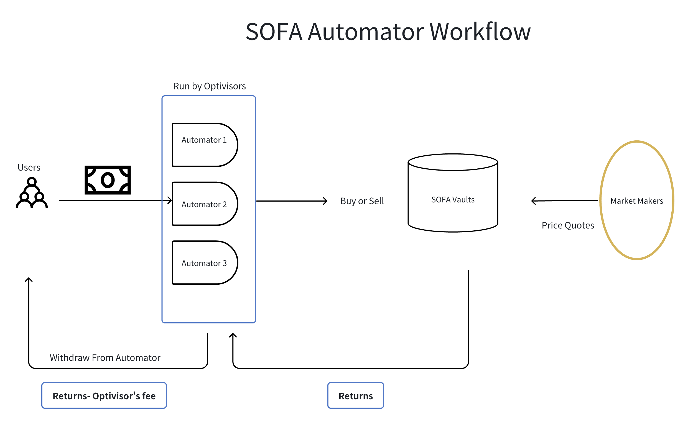

Automator
前往 Automator
介绍
为了实现让大众民主化期权交易的使命，SOFA团队创建了Automator，为用户提供了一种直观的方式来被动赚取策略收益。通过利用被统称为Optivisors的策略管理者社区，用户可以参与他们喜欢的管理策略，以分享小部分收益作为回报。这种双赢模式将为存款人提供去中心化和链上访问，以便通过不断发展的社区认可的Optivisors基础来赚取各种高质量的回报。

Automator的关键特性
社区驱动设计。 Automator的推出反映了我们对社区参与的承诺，提供去中心化工具以民主化DeFi期权交易旅程，同时扩展用户对安全收益解决方案的访问，这些解决方案将随着时间的推移而演变。
直观的界面。 复杂的期权策略已被简化为一个直观且易于使用的界面，同时提供完全的链上透明性和符合DeFi精神的策略披露。
市场中立。 无论市场走势如何，SOFA产品都为Optivisors提供了完全的策略灵活性，从而从波动性中获益。
显著的Gas费用节省。 Optivisors能够在Automator上“滚动”其持续进行的策略，而无需额外的Gas费用，促进长期盈利和可持续性。

Optivisors：我们的社区策略冠军
Automator的一个突出特点在于其社区驱动的方法。通过利用我们DeFi社区的集体智慧，策略创建者，即Optivisors，能够设计、执行和监控正在进行的SOFA策略，以造福于被动存款者。作为对其专业知识的回报，Optivisors将获得总策略收益的一部分，以创造一个双赢的结果，协调经济激励并促进长期参与。
随着SOFA继续扩大其产品供应和链连接，Optivisors将在我们的生态系统中扮演越来越重要的角色，因为他们的策略在复杂性和覆盖范围上不断扩展。协议扩展到其他工具和CeFi连接提供了可行的里程碑，我们期待这些，并鼓励持续的社区反馈以推动我们迈向下一步。

Automator工作流程

Automator常见问题解答
A. Automator如何运作？
Automator 涉及三个关键参与者：用户、Optivisors 和 做市商。
用户
用户可以选择他们偏好的 Automator 并存入代币。在 Optivisor 的专业指导下，Automator 生成的收益会分配给参与的用户。此外，用户还可以通过参与获得奖励 $RCH 代币空投。
Optivisors
Optivisors 负责创建 Automators 并通过与 SOFA Vaults 互动执行交易策略，例如看涨和看跌头寸。作为对其专业知识的奖励，Optivisors 可以获得部分利润。
做市商
与其他 SOFA 产品类似，做市商为 SOFA Vaults 提供定价。Optivisors 管理者利用这些报价来分配 Automator 资金并参与 SOFA Vault 策略。一旦这些策略结算，利润将按比例分配。
B. 我会被收取哪些费用？
协议对 Automators 产生的利润收取 15% 的服务费。如果没有产生利润，则不收取服务费。
Optivisors 在创建 Automator 时也可以设定管理费。此费用仅适用于利润，但在亏损期间记录为负债。Optivisor 只有在 Automator 的累计利润转为正数时，才能再次收取管理费。
C. 如何成为 Optivisor 并创建 Automator？
任何人都可以作为 Optivisor 创建 Automator。然而，每个地址在每条链和每种存款代币类型上仅限创建一个 Automator。要解锁策略配额，Optivisor 必须销毁 500 $RCH 代币。
D. Automator 内的 gas 费用如何处理？
Optivisor 负责支付与 Automator 内执行的交易相关的所有 gas 费用。
E. 存入 Automator 后，我如何提取资金？
Automators 类似于基金，设有赎回锁定期以管理流动性和策略执行。可以随时发起提款，但需要等待锁定期结束，锁定期最长可达 30 天，由 Optivisor 在创建时设定。
F. 我可以期待 Automator 带来哪些类型的回报？
Automator 的回报由三个关键组成部分构成：
利息
- 存入 Automator 的资金会自动质押在 Aave 或 Curve 等低风险协议中，产生被动利息。
- 这些回报会实时更新，并在用户提取时根据其份额分配。
交易PNL
- 通过Optivisor的交易策略产生的收益
- 这些收益仅在交易策略到期后反映出来，允许Optivisor认领头寸。用户在提款时收到他们的份额。
$RCH激励
- 通过Optivisor的交易活动赚取的$RCH代币空投。
- 空投根据Automator当前持有者及其各自的持有份额每日分发。用户可以直接从Claim $RCH页面领取他们的$RCH代币。
G. 使用Automator有哪些风险？
Automator涉及风险，因为Optivisor管理用户资金用于期权交易和低风险协议。Optivisor决定使用利息收益或本金进行交易的平衡，这影响Automator的风险水平。每个Automator都有一个缓冲限额，最高可达99.9%，表示为低风险协议保留的资金部分。用户可以查看每个Automator的具体缓冲，以选择与其风险承受能力相符的Automator。SOFA不保证无风险交易，且本金损失是可能的。在参与之前请仔细评估您的风险承受能力。
H. $RCH空投如何生成并分发到用户账户？
$RCH代币通过Optivisor的交易活动赚取，用户可以在之后认领，类似于其他SOFA Vaults。您可以在这里查看$RCH空投信息：https://docs.sofa.org/zh/tokenomics/